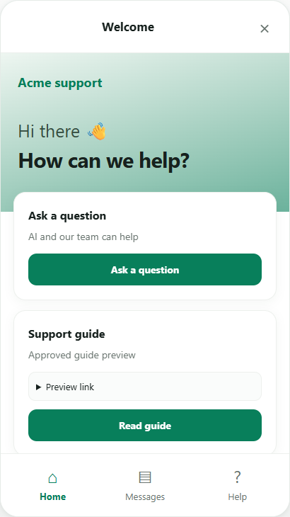

مشروع مستقل / Pektrix
دعم يبقى
داخل المنتج.
واجهة دعم عملاء قابلة للتضمين تجمع محادثات الذكاء الاصطناعي والمراسلة والمحتوى الإرشادي داخل الموقع الذي يستخدمه العميل.
- مساهمتي
- خدمات خلفية وتطبيق ويب وواجهة دعم مضمّنة
- التركيز الهندسي
- دعم بإعدادات خاصة لكل جهة وتجربة بالعربية والإنجليزية
- التقنيات المستخدمة
- ASP.NET Core · JavaScript · تكامل الذكاء الاصطناعي


01 / السياق
المشكلة
يحتاج المستخدم إلى الوصول بسهولة إلى الدعم أثناء استخدام المنتج. كما يحتاج الموقع إلى تجربة دعم تعكس هويته ومحتواه ولغته.
02 / مسؤولية التنفيذ
مساهمتي
طوّرت تطبيق Pektrix وخدماته الخلفية وواجهة الدعم المضمّنة. يربط المشروع إعدادات كل جهة وعمليات المحادثة والمراسلة والمحتوى الإرشادي في واجهة واحدة للعملاء.
- تحميل واجهة الدعم وإعدادات الجهة الخاصة بالموقع.
- اختيار سؤال أو محادثة أو دليل دعم.
- متابعة تجربة الدعم داخل الموقع.
03 / الهندسة
القرارات وراء الواجهة
إعدادات خاصة بكل جهة
تتبع الهوية وسلوك الواجهة إعدادات الجهة. ولا تعرض الإعدادات العامة سوى الحقول المخصصة للزائر، بينما تحافظ حدود الجهات والجلسات على ارتباط المحادثات بسياقها.
اللغة جزء من التجربة
دعم العربية والإنجليزية لا يقتصر على ترجمة عنوان؛ بل يشمل محتوى الواجهة وطريقة عرضه بما يناسب اللغة المختارة.
واجهة تدعمها خدمات خلفية
الواجهة المضمّنة إحدى نقاط الدخول إلى التطبيق. وتدير الخدمات الخلفية الإعدادات وعمليات المحادثة التي تدعمها.
04 / النتيجة
ما يقدّمه المشروع
يقدّم المشروع واجهة دعم مضمّنة تجمع الأسئلة والمراسلة والمحتوى الإرشادي، مع تجربة قابلة للتهيئة لكل جهة. تعرض اللقطة التجريبية الشاشة الرئيسية للواجهة.